Meerschweinchen – Hörverstehen mit Lückentext (interaktiv)
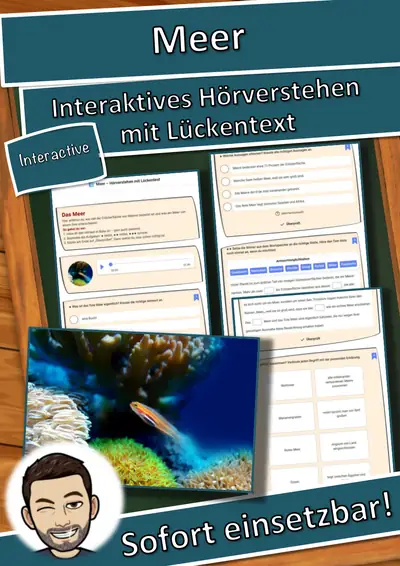
Meer – Hörverstehen mit Lückentext (interaktiv)
Matterhorn – Hörverstehen mit Lückentext (interaktiv)

Maschine – Hörverstehen mit Lückentext (interaktiv)

Marseille – Hörverstehen mit Lückentext (interaktiv)

Markgröningen – Hörverstehen mit Lückentext (interaktiv)

Marienkäfer – Hörverstehen mit Lückentext (interaktiv)

Maracas – Hörverstehen mit Lückentext (interaktiv)

Mandarine – Hörverstehen mit Lückentext (interaktiv)
Mammut – Hörverstehen mit Lückentext (interaktiv)

Magnet – Hörverstehen mit Lückentext (interaktiv)
Magen – Hörverstehen mit Lückentext (interaktiv)

Löwenzahn – Hörverstehen mit Lückentext (interaktiv)

Lupe – Hörverstehen mit Lückentext (interaktiv)

Lunge – Hörverstehen mit Lückentext (interaktiv)
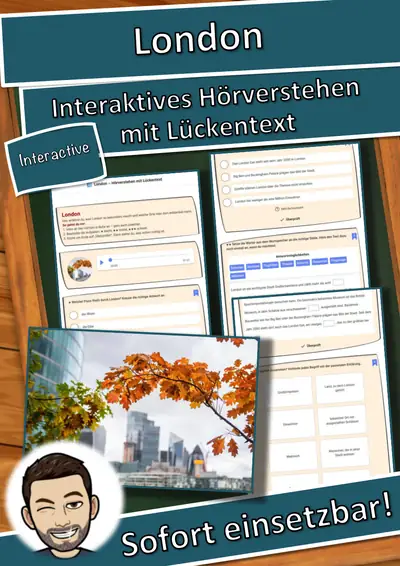
London – Hörverstehen mit Lückentext (interaktiv)
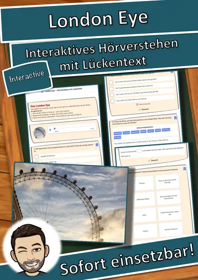
London Eye – Hörverstehen mit Lückentext (interaktiv)
Limonade – Hörverstehen mit Lückentext (interaktiv)

Liechtenstein – Hörverstehen mit Lückentext (interaktiv)
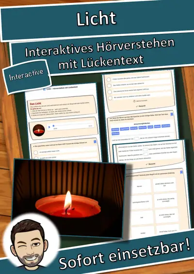
Licht – Hörverstehen mit Lückentext (interaktiv)

Leuchtturm – Hörverstehen mit Lückentext (interaktiv)

Lesen – Hörverstehen mit Lückentext (interaktiv)

Lernen – Hörverstehen mit Lückentext (interaktiv)

Landkreis Wunsiedel im Fichtelgebirge – Hörverstehen mit Lückentext (interaktiv)
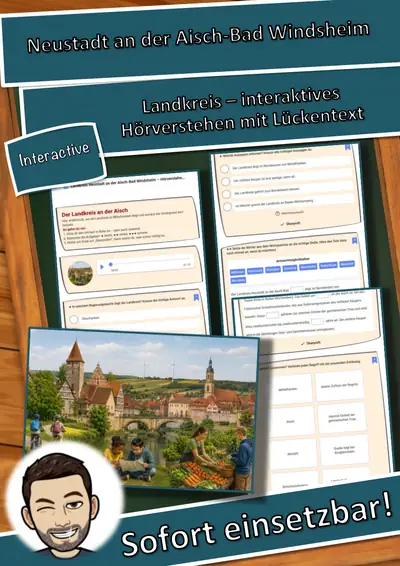
Landkreis Neustadt an der Aisch-Bad Windsheim – Hörverstehen mit Lückentext (interaktiv)

Leopard – Hörverstehen mit Lückentext (interaktiv)

Lehrer – Hörverstehen mit Lückentext (interaktiv)
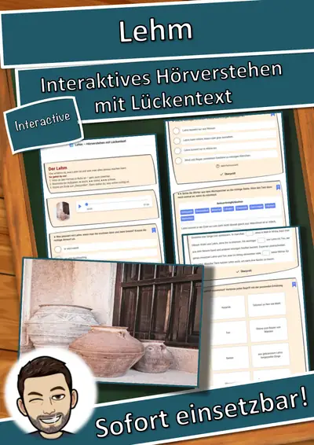
Lehm – Hörverstehen mit Lückentext (interaktiv)

Lebkuchen – Hörverstehen mit Lückentext (interaktiv)
Leben – Hörverstehen mit Lückentext (interaktiv)
Larve – Hörverstehen mit Lückentext (interaktiv)

Laubbaum – Hörverstehen mit Lückentext (interaktiv)

Lastwagen – Hörverstehen mit Lückentext (interaktiv)

Landwirtschaft – Hörverstehen mit Lückentext (interaktiv)

Landkreis Verden – Hörverstehen mit Lückentext (interaktiv)

Landkreis Tübingen – Hörverstehen mit Lückentext (interaktiv)
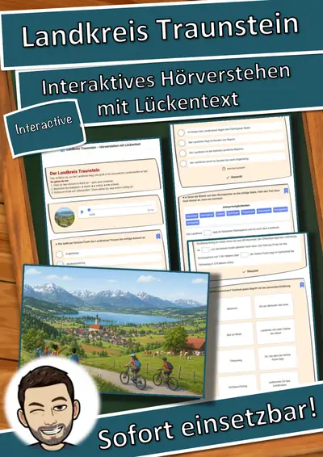
Landkreis Traunstein – Hörverstehen mit Lückentext (interaktiv)

Landkreis Straubing-Bogen – Hörverstehen mit Lückentext (interaktiv)

Landkreis Starnberg – Hörverstehen mit Lückentext (interaktiv)

Landkreis Stade – Hörverstehen mit Lückentext (interaktiv)

Landkreis Sigmaringen – Hörverstehen mit Lückentext (interaktiv)
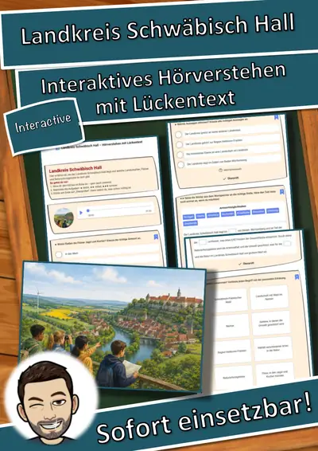
Landkreis Schwäbisch Hall – Hörverstehen mit Lückentext (interaktiv)

Landkreis Schweinfurt – Hörverstehen mit Lückentext (interaktiv)
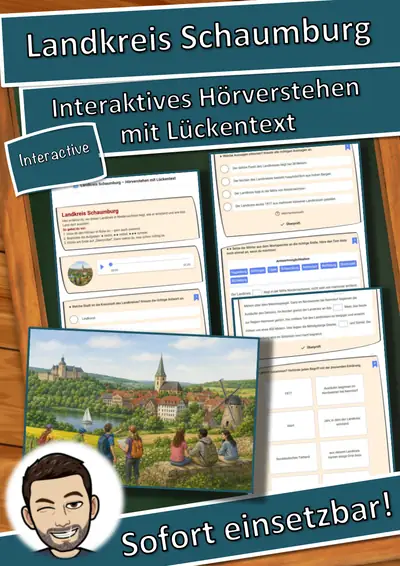
Landkreis Schaumburg – Hörverstehen mit Lückentext (interaktiv)

Landkreis Rosenheim – Hörverstehen mit Lückentext (interaktiv)
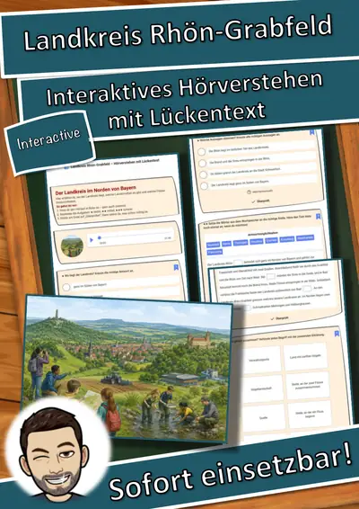
Landkreis Rhön-Grabfeld – Hörverstehen mit Lückentext (interaktiv)

Landkreis Reutlingen – Hörverstehen mit Lückentext (interaktiv)

Landkreis Regen – Hörverstehen mit Lückentext (interaktiv)
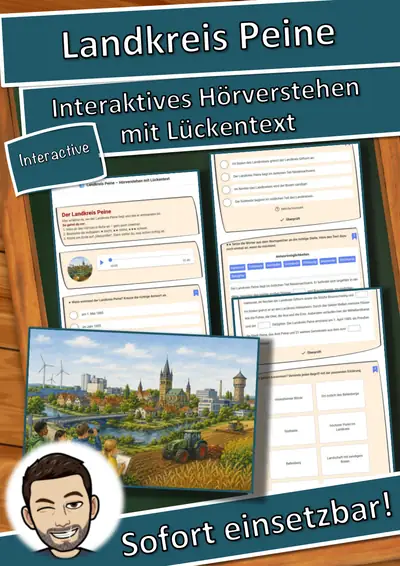
Landkreis Peine – Hörverstehen mit Lückentext (interaktiv)

Landkreis Passau – Hörverstehen mit Lückentext (interaktiv)
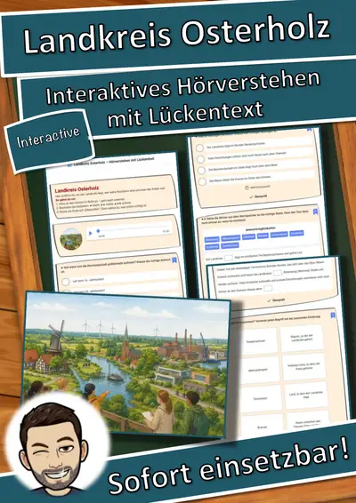
Landkreis Osterholz – Hörverstehen mit Lückentext (interaktiv)

Landkreis Ostallgäu – Hörverstehen mit Lückentext (interaktiv)
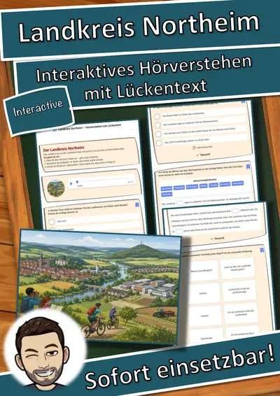
Landkreis Northeim – Hörverstehen mit Lückentext (interaktiv)
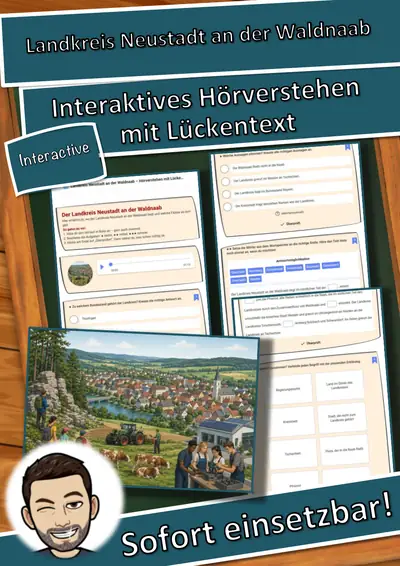
Landkreis Neustadt an der Waldnaab – Hörverstehen mit Lückentext (interaktiv)

Landkreis Mühldorf am Inn – Hörverstehen mit Lückentext (interaktiv)
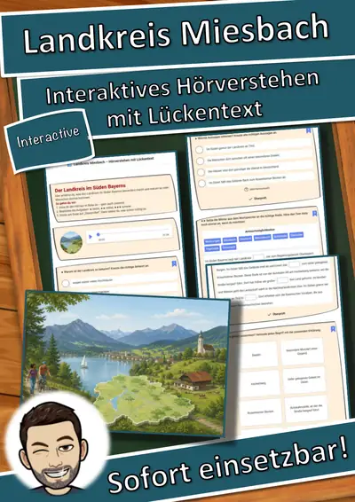
Landkreis Miesbach – Hörverstehen mit Lückentext (interaktiv)
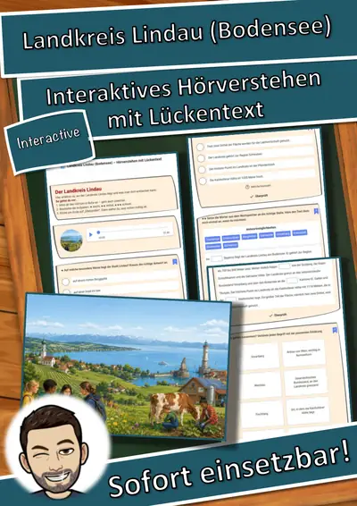
Landkreis Lindau (Bodensee) – Hörverstehen mit Lückentext (interaktiv)

Landkreis Leer – Hörverstehen mit Lückentext (interaktiv)
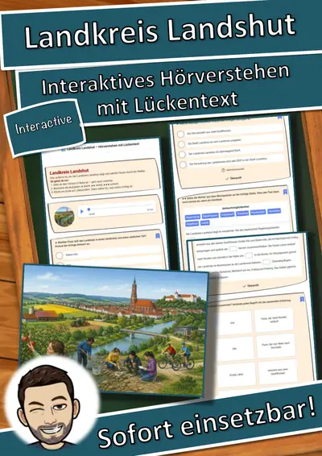
Landkreis Landshut – Hörverstehen mit Lückentext (interaktiv)

Landkreis Kulmbach – Hörverstehen mit Lückentext (interaktiv)
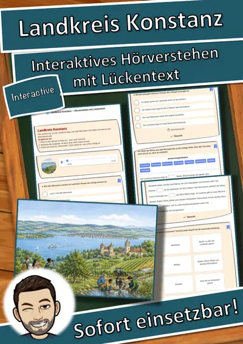
Landkreis Konstanz – Hörverstehen mit Lückentext (interaktiv)
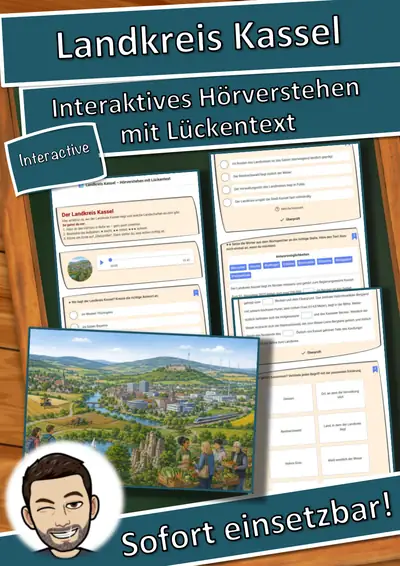
Landkreis Kassel – Hörverstehen mit Lückentext (interaktiv)

Landkreis Hof – Hörverstehen mit Lückentext (interaktiv)

Landkreis Hildburghausen – Hörverstehen mit Lückentext (interaktiv)

Landkreis Helmstedt – Hörverstehen mit Lückentext (interaktiv)

Landkreis Heidenheim – Hörverstehen mit Lückentext (interaktiv)

Landkreis Haßberge – Hörverstehen mit Lückentext (interaktiv)

Landkreis Harz – Hörverstehen mit Lückentext (interaktiv)

Landkreis Görlitz – Hörverstehen mit Lückentext (interaktiv)

Landkreis Göppingen – Hörverstehen mit Lückentext (interaktiv)

Landkreis Groß-Gerau – Hörverstehen mit Lückentext (interaktiv)

Landkreis Greiz – Hörverstehen mit Lückentext (interaktiv)
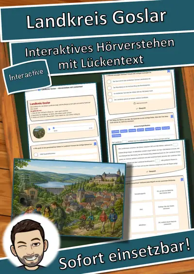
Landkreis Goslar – Hörverstehen mit Lückentext (interaktiv)

Landkreis Gießen – Hörverstehen mit Lückentext (interaktiv)

Landkreis Garmisch-Partenkirchen – Hörverstehen mit Lückentext (interaktiv)

Landkreis Fürstenfeldbruck – Hörverstehen mit Lückentext (interaktiv)
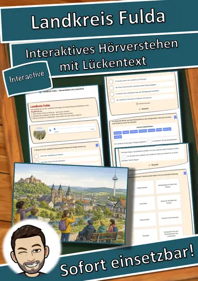
Landkreis Fulda – Hörverstehen mit Lückentext (interaktiv)
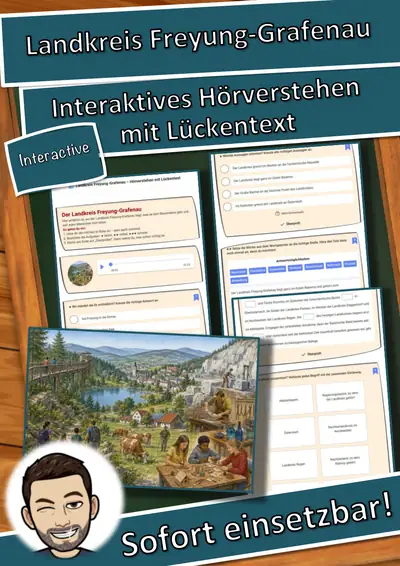
Landkreis Freyung-Grafenau – Hörverstehen mit Lückentext (interaktiv)

Landkreis Esslingen – Hörverstehen mit Lückentext (interaktiv)

Landkreis Elbe-Elster – Hörverstehen mit Lückentext (interaktiv)
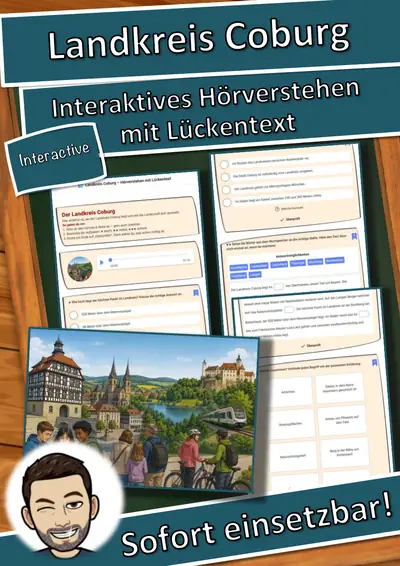
Landkreis Coburg – Hörverstehen mit Lückentext (interaktiv)

Landkreis Cloppenburg – Hörverstehen mit Lückentext (interaktiv)

Landkreis Bergstraße – Hörverstehen mit Lückentext (interaktiv)
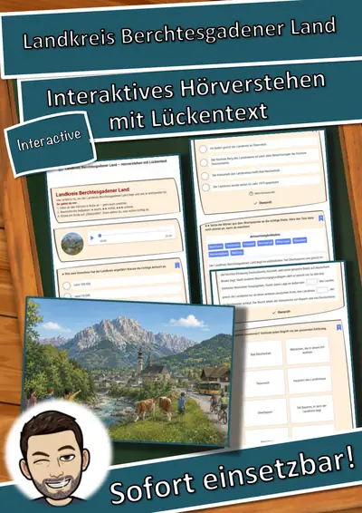
Landkreis Berchtesgadener Land – Hörverstehen mit Lückentext (interaktiv)

Landkreis Bad Kreuznach – Hörverstehen mit Lückentext (interaktiv)
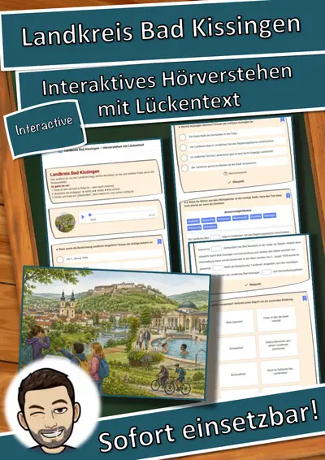
Landkreis Bad Kissingen – Hörverstehen mit Lückentext (interaktiv)
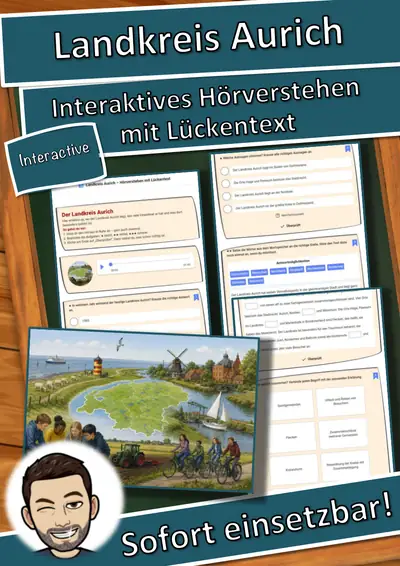
Landkreis Aurich – Hörverstehen mit Lückentext (interaktiv)
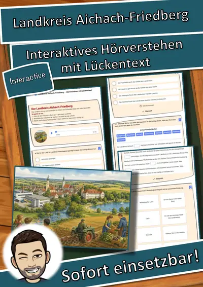
Landkreis Aichach-Friedberg – Hörverstehen mit Lückentext (interaktiv)
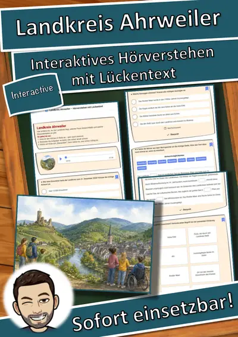
Landkreis Ahrweiler – Hörverstehen mit Lückentext (interaktiv)

Landkarte – Hörverstehen mit Lückentext (interaktiv)
Lama – Hörverstehen mit Lückentext (interaktiv)
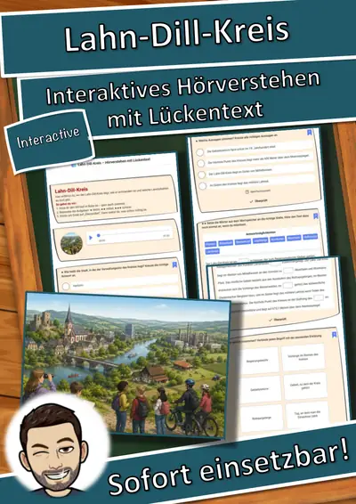
Lahn-Dill-Kreis – Hörverstehen mit Lückentext (interaktiv)
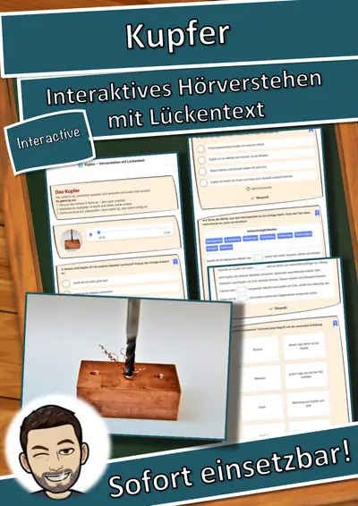
Kupfer – Hörverstehen mit Lückentext (interaktiv)

Laden – Hörverstehen mit Lückentext (interaktiv)

Labrador – Hörverstehen mit Lückentext (interaktiv)
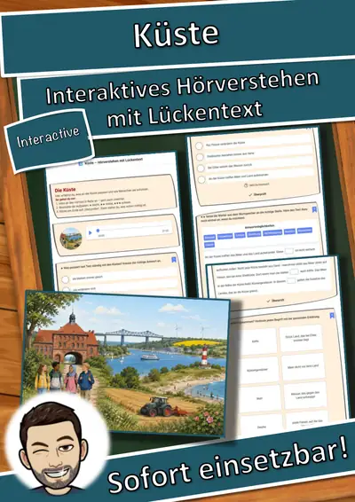
Küste – Hörverstehen mit Lückentext (interaktiv)

Kürbisse – Hörverstehen mit Lückentext (interaktiv)
Kühlschrank – Hörverstehen mit Lückentext (interaktiv)
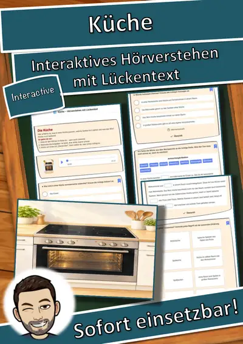
Küche – Hörverstehen mit Lückentext (interaktiv)
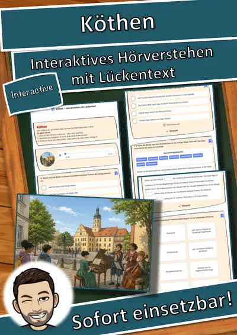
Köthen – Hörverstehen mit Lückentext (interaktiv)

König – Hörverstehen mit Lückentext (interaktiv)
Käse – Hörverstehen mit Lückentext (interaktiv)
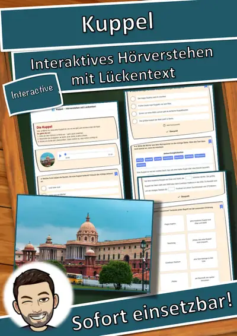
Kuppel – Hörverstehen mit Lückentext (interaktiv)

Kunststoff – Hörverstehen mit Lückentext (interaktiv)
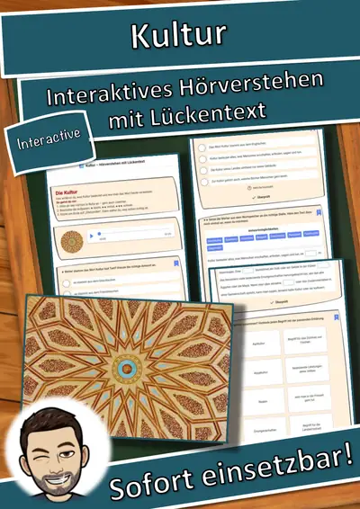
Kultur – Hörverstehen mit Lückentext (interaktiv)
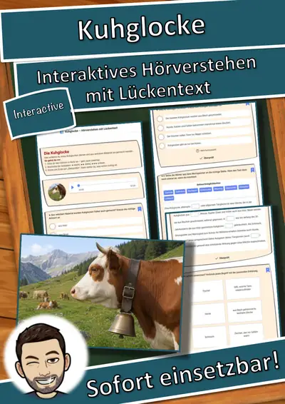
Kuhglocke – Hörverstehen mit Lückentext (interaktiv)
Kugelschreiber – Hörverstehen mit Lückentext (interaktiv)
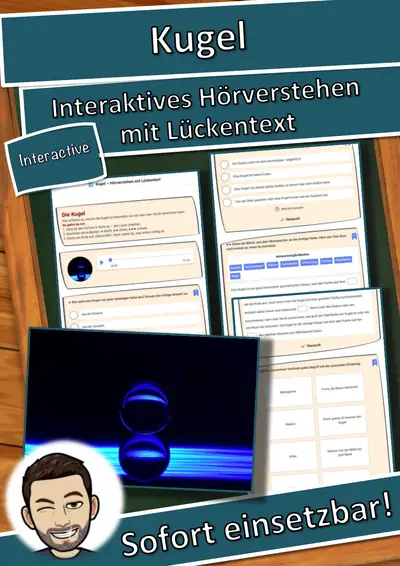
Kugel – Hörverstehen mit Lückentext (interaktiv)
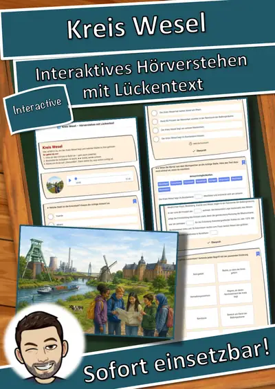
Kreis Wesel – Hörverstehen mit Lückentext (interaktiv)
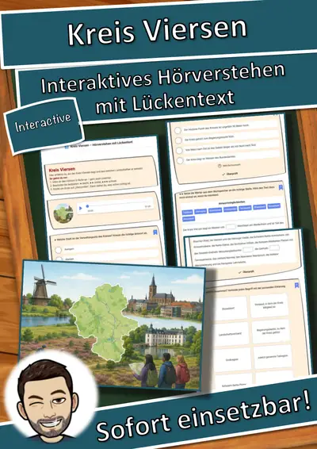
Kreis Viersen – Hörverstehen mit Lückentext (interaktiv)
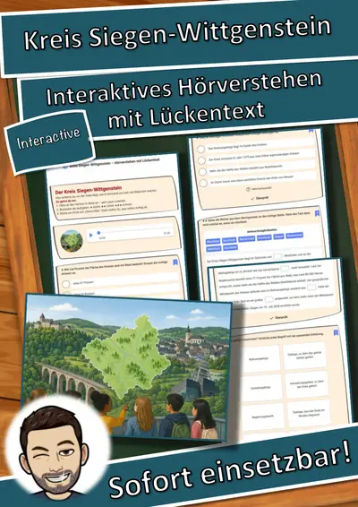
Kreis Siegen-Wittgenstein – Hörverstehen mit Lückentext (interaktiv)
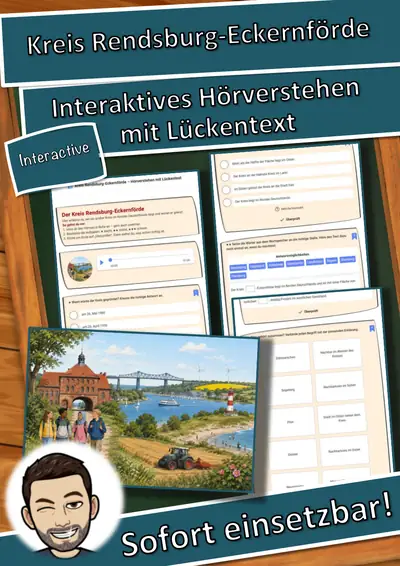
Kreis Rendsburg-Eckernförde – Hörverstehen mit Lückentext (interaktiv)
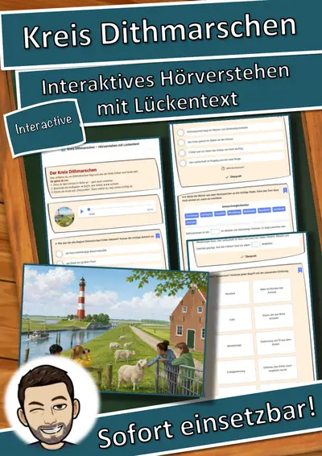
Kreis Dithmarschen – Hörverstehen mit Lückentext (interaktiv)
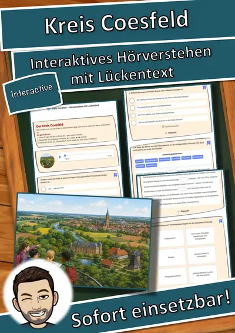
Kreis Coesfeld – Hörverstehen mit Lückentext (interaktiv)
Koto – Hörverstehen mit Lückentext (interaktiv)
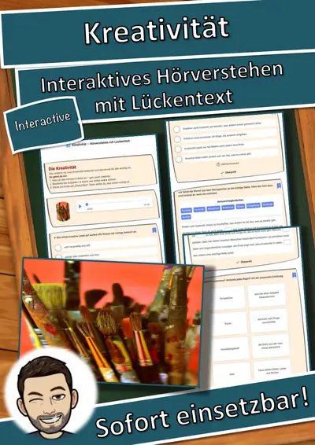
Kreativität – Hörverstehen mit Lückentext (interaktiv)

Kranich – Hörverstehen mit Lückentext (interaktiv)
Krakau – Hörverstehen mit Lückentext (interaktiv)
Kopftuch – Hörverstehen mit Lückentext (interaktiv)
Kolosseum – Hörverstehen mit Lückentext (interaktiv)
Kolibri – Hörverstehen mit Lückentext (interaktiv)
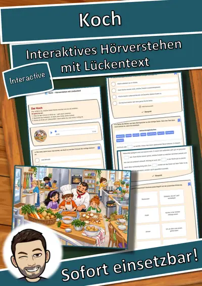
Koch – Hörverstehen mit Lückentext (interaktiv)
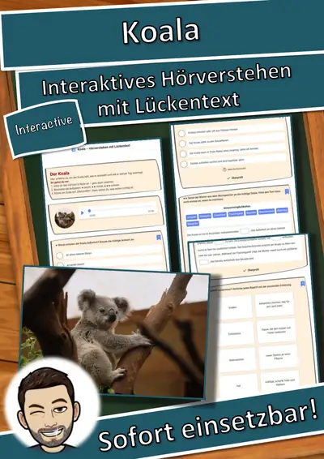
Koala – Hörverstehen mit Lückentext (interaktiv)
Knospe – Hörverstehen mit Lückentext (interaktiv)
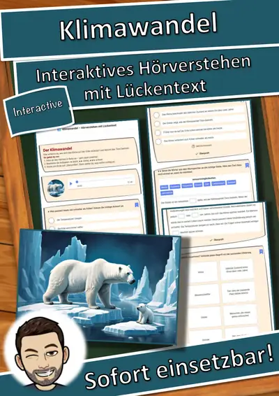
Klimawandel – Hörverstehen mit Lückentext (interaktiv)
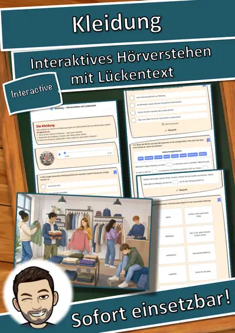
Kleidung – Hörverstehen mit Lückentext (interaktiv)
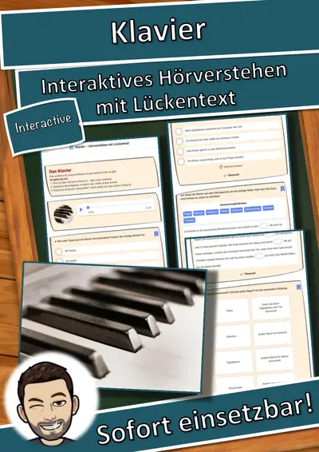
Klavier – Hörverstehen mit Lückentext (interaktiv)
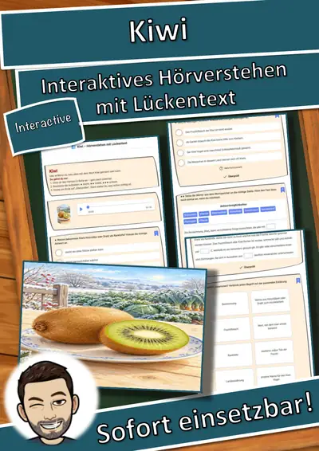
Kiwi – Hörverstehen mit Lückentext (interaktiv)
Kirche – Hörverstehen mit Lückentext (interaktiv)
Kino – Hörverstehen mit Lückentext (interaktiv)
Kind – Hörverstehen mit Lückentext (interaktiv)
Keyboard – Hörverstehen mit Lückentext (interaktiv)
Kaugummi – Hörverstehen mit Lückentext (interaktiv)
Katzen – Hörverstehen mit Lückentext (interaktiv)
Kanal – Hörverstehen mit Lückentext (interaktiv)
Kastanien – Hörverstehen mit Lückentext (interaktiv)

Karussell – Hörverstehen mit Lückentext (interaktiv)

Karotte – Hörverstehen mit Lückentext (interaktiv)
Karneval – Hörverstehen mit Lückentext (interaktiv)
Kaninchen – Hörverstehen mit Lückentext (interaktiv)
Kamera – Hörverstehen mit Lückentext (interaktiv)
Kalimba – Hörverstehen mit Lückentext (interaktiv)
Kakao – Hörverstehen mit Lückentext (interaktiv)
Kaiser – Hörverstehen mit Lückentext (interaktiv)

Jahreszeiten – Hörverstehen mit Lückentext (interaktiv)
Innenstadt – Hörverstehen mit Lückentext (interaktiv)

Igel – Hörverstehen mit Lückentext (interaktiv)
Kaffee – Hörverstehen mit Lückentext (interaktiv)
Junge – Hörverstehen mit Lückentext (interaktiv)
Jugendstil – Hörverstehen mit Lückentext (interaktiv)
Hunger – Hörverstehen mit Lückentext (interaktiv)
Hunde – Hörverstehen mit Lückentext (interaktiv)
Hühner – Hörverstehen mit Lückentext (interaktiv)
Hubschrauber – Hörverstehen mit Lückentext (interaktiv)
Horn – Hörverstehen mit Lückentext (interaktiv)
Jugendherberge – Hörverstehen mit Lückentext (interaktiv)
Islam – Hörverstehen mit Lückentext (interaktiv)
Husky – Hörverstehen mit Lückentext (interaktiv)
Hornisse – Hörverstehen mit Lückentext (interaktiv)
Hopfen – Hörverstehen mit Lückentext (interaktiv)

Honig – Hörverstehen mit Lückentext (interaktiv)
Holz – Hörverstehen mit Lückentext (interaktiv)
Hochsensibilität – Hörverstehen mit Lückentext (interaktiv)
Hirsche – Hörverstehen mit Lückentext (interaktiv)
Hexe – Hörverstehen mit Lückentext (interaktiv)

Heuschrecken – Hörverstehen mit Lückentext (interaktiv)

Herbst – Hörverstehen mit Lückentext (interaktiv)
Heidekreis – Hörverstehen mit Lückentext (interaktiv)
Haut – Hörverstehen mit Lückentext (interaktiv)
Haustiere – Hörverstehen mit Lückentext (interaktiv)
Haussperling – Hörverstehen mit Lückentext (interaktiv)
Haubentaucher – Hörverstehen mit Lückentext (interaktiv)
Hasen – Hörverstehen mit Lückentext (interaktiv)
Haselnuss – Hörverstehen mit Lückentext (interaktiv)
Harfe – Hörverstehen mit Lückentext (interaktiv)
Hannover – Hörverstehen mit Lückentext (interaktiv)
Handy – Hörverstehen mit Lückentext (interaktiv)
Hamster – Hörverstehen mit Lückentext (interaktiv)

Halloween – Hörverstehen mit Lückentext (interaktiv)
Hafen – Hörverstehen mit Lückentext (interaktiv)
Haar – Hörverstehen mit Lückentext (interaktiv)
Gurke – Hörverstehen mit Lückentext (interaktiv)
Gummistiefel – Hörverstehen mit Lückentext (interaktiv)
Grundschule – Hörverstehen mit Lückentext (interaktiv)
Griechische Götter – Hörverstehen mit Lückentext (interaktiv)
Grashüpfer – Hörverstehen mit Lückentext (interaktiv)
Gras – Hörverstehen mit Lückentext (interaktiv)
Glühwürmchen – Hörverstehen mit Lückentext (interaktiv)
Glühlampe – Hörverstehen mit Lückentext (interaktiv)
Glücksspiel – Hörverstehen mit Lückentext (interaktiv)
Gong – Hörverstehen mit Lückentext (interaktiv)
Globus – Hörverstehen mit Lückentext (interaktiv)
Glas – Hörverstehen mit Lückentext (interaktiv)
Giraffen – Hörverstehen mit Lückentext (interaktiv)
Geweih – Hörverstehen mit Lückentext (interaktiv)

Geschwindigkeit – Hörverstehen mit Lückentext (interaktiv)
Gepard – Hörverstehen mit Lückentext (interaktiv)

Gemüse – Hörverstehen mit Lückentext (interaktiv)
Geist – Hörverstehen mit Lückentext (interaktiv)
Geige – Hörverstehen mit Lückentext (interaktiv)
Gehweg – Hörverstehen mit Lückentext (interaktiv)
Gemälde – Hörverstehen mit Lückentext (interaktiv)
Gemeinde – Hörverstehen mit Lückentext (interaktiv)
Geld – Hörverstehen mit Lückentext (interaktiv)

Gefühl – Hörverstehen mit Lückentext (interaktiv)
Geburtstag – Hörverstehen mit Lückentext (interaktiv)
Gartenschläfer – Hörverstehen mit Lückentext (interaktiv)
Fußball – Hörverstehen mit Lückentext (interaktiv)
Fuß – Hörverstehen mit Lückentext (interaktiv)
Frühling – Hörverstehen mit Lückentext (interaktiv)
Füllfederhalter – Hörverstehen mit Lückentext (interaktiv)
Fötus – Hörverstehen mit Lückentext (interaktiv)
Frucht – Hörverstehen mit Lückentext (interaktiv)

Frost – Hörverstehen mit Lückentext (interaktiv)
Frisbee – Hörverstehen mit Lückentext (interaktiv)

Frieden – Hörverstehen mit Lückentext (interaktiv)
Freizeitpark – Hörverstehen mit Lückentext (interaktiv)
Freilichtmuseum – Hörverstehen mit Lückentext (interaktiv)
Frankreich – Hörverstehen mit Lückentext (interaktiv)
Fossil – Hörverstehen mit Lückentext (interaktiv)
Folk – Hörverstehen mit Lückentext (interaktiv)
Flöte – Hörverstehen mit Lückentext (interaktiv)
Flugzeug – Hörverstehen mit Lückentext (interaktiv)
Flughunde – Hörverstehen mit Lückentext (interaktiv)
Fluss – Hörverstehen mit Lückentext (interaktiv)
Fliegenpilz – Hörverstehen mit Lückentext (interaktiv)
Flagge – Hörverstehen mit Lückentext (interaktiv)
Fischotter – Hörverstehen mit Lückentext (interaktiv)
Fische – Hörverstehen mit Lückentext (interaktiv)
Finger – Hörverstehen mit Lückentext (interaktiv)
Fichtelgebirge – Hörverstehen mit Lückentext (interaktiv)
Feuer – Hörverstehen mit Lückentext (interaktiv)
Fenster – Hörverstehen mit Lückentext (interaktiv)
Fell – Hörverstehen mit Lückentext (interaktiv)
Feldhamster – Hörverstehen mit Lückentext (interaktiv)
Feder – Hörverstehen mit Lückentext (interaktiv)
Faxgerät – Hörverstehen mit Lückentext (interaktiv)
Farbe – Hörverstehen mit Lückentext (interaktiv)
Fantasie – Hörverstehen mit Lückentext (interaktiv)

Fahrrad – Hörverstehen mit Lückentext (interaktiv)
Keine Materialien gefunden – versuch einen anderen Suchbegriff oder Filter.
Aufbau eines Lückentextes mit Wortspeicher
Im Zentrum steht ein kindgerechter Sachtext, aus dem die Fachbegriffe entfernt wurden. Der Wortspeicher listet die fehlenden Wörter auf, sodass es um Verstehen geht und nicht um Raten. Ein Suchsel greift dieselben Begriffe noch einmal auf und festigt die Schreibweise.
Über einen QR-Code lässt sich der Text zusätzlich anhören. Das hilft schwächeren Leserinnen und Lesern und schafft nebenbei eine Übung im Hörverstehen.
Einsatz im Unterricht
Die Blätter sind für Stationenarbeit, Wochenplan und Vertretungsstunden gedacht. Weil jedes Blatt eine Lösung mitbringt, lässt es sich auch ohne Einführung austeilen.
In Klassen mit unterschiedlichem Sprachstand hat sich bewährt, zuerst die Hörfassung anzubieten und den Lückentext danach ausfüllen zu lassen.
Häufige Fragen
Ist der Wortspeicher immer dabei?
Ja. Alle fehlenden Wörter stehen im Wortspeicher, damit der Schwerpunkt auf dem Textverständnis liegt.
Gibt es zu jedem Blatt eine Lösung?
Ja, jedes Material enthält eine Musterlösung.
Wie funktioniert das Hörverstehen?
Der QR-Code auf dem Blatt führt direkt zur Audiofassung des Sachtextes. Eine zusätzliche App wird nicht benötigt.